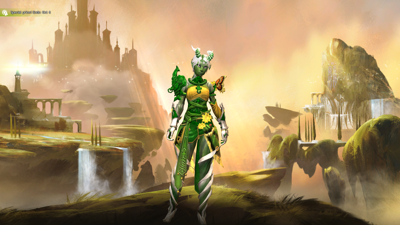

Hello everyone! I am Ishalana. I am a Sylvari Druid who is always ready to lend a hand. I am the guildmaster of the guild “Brains Strength and Steel” or [BSS] as it is displayed in my world. It is not a very large guild, only five members including myself. I hope to enlarge the guild someday. However, I do not have much time as I am in college right now in real life. If you did not know I go to Union University in Tennessee to learn how to make video games.
I have run strikes, fractals, and other group events and instances with other players and have enjoyed how nice other players can be in the PvE or player vs. environment areas. I rarely run into rude people, but there are plenty of weird people that you can run into out in the world.
I have saved the world from six Elder Dragons: Zhaitan, Mordremoth, Kralkatorrik, Jormag, Primordus, and Soo-Won.
The Undead Dragon Zhaitan attacked Tyria with an army of undead minions which my people, the Sylvari are called to fight against. My allies and I fought him above the land of Orr which had sunk beneath the waves long ago, only to be pulled back up by Zhaitan.
The Jungle Dragon Mordremoth awoke after Zhaitan's defeat and corrupted the minds of the Sylvari, turning them against each other. I fought against his corruption and ultimately defeated him, but at the cost of losing several friends.
The Crystal Dragon Kralkatorrik was hunted by Balthazar, the god of war. I fought against Balthazar to stop him from killing Kralkatorrik because the elder dragons were needed to keep Tyria in balance. Ultimately I had no choice but to end Kralkatorrik to protect Tyria from destruction.
The Ice Dragon Jormag corrupted the mind of Bangar Ruinbringer and Ryland Steelcatcher. Turning Bangar into a mouth piece for Jorma got speak through and transforming Ryland into Jormag's champion. With Jormag awakened Jormag's twin, the Fire Dragon Primordus was not far behind. In an epic battle between the two elder dragons I fought against their two champions, Braham Eirsson and Ryland. After they had been defeated, but still alive, Jormag struck Primordus and they destroyed each other.
After that there was a time of peace before the Aetherblades, a group of sky pirates kidnapped one of my friends. I gave chase, ending up in the land of Cantha, where the Water Dragon Soo-Won, the mother of the other elder dragons that I fought against dwelt. She became corrupted by the Void and Aurene, an elder dragon that I raised from an egg, and I, along with our friends had no choice but to end her, to end the dragon cycle.

After Soo-Won's death, Aurene absorbed all of the powers of the Elder Dragons and left to find a place where she could be alone to restore balance to Tyria. I have been called many titles: Valient, Magister, Commander, Wayfinder, but the most special of them all is Champion as I am Aurene's champion. If she ever needs me, I will always be there to help her, and I wait for her return in the most obvious way possible… saving the world from foes that are not of this world! What better way to wait is there?